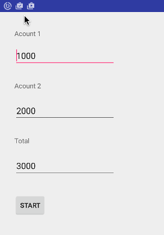

COMP 2601 Winter 2016
Ex 05 Java Threads and Concurrency
© L.D. Nel 2016
Revisions -none yet
Description:
The purpose of this exercise is to familiarize you with threads and concurrency in Java. Here we look at features supplied by Java, not Android. In the next class exercise we will look at helper classes provided by Android.
You need to demonstrate your exercise to the TA or Prof. before you leave the class to get credit for it. Marks: 2 or completion, 1 for partial progress, 0 for no show or no progress. (A mark of 1 can be upgraded to 2 is show us your completed work within one week of this exercise.)
Instructions:
Background:
A Thread is a context for executing a piece of code (it provides a program counter that steps through code instructions etc.) Concurrency refers to two or more pieces of code executing at the same time. A typical way to create the illusion of concurrency is switching back and forth among different threads giving each one a small "time slice" of execution time. If you switch between threads quickly enough it creates the illusion that several pieces of code are running in parallel -concurrently.
The tricky part is that thread switching just suspends the current thread at any old statement in the code. What makes matters worse it that the code statement is not even a complete java source statement, instead it is at an arbitrary machine-code level instruction.
The various threads of an application all have access to the same application memory hence they can access the same objects. This is a good feature, but causes problems when two threads try to modify the same object at the "same time". A classic problem is the read-modify-write scenario. Two threads are trying to read a variable, modify its value and then save the new value of the same object.
Assume a bank account object has a balance of $1000. One thread wants to execute: (note int temp is local to each thread.)
int temp = acc.getBalance();
temp = temp + 500;
acc.setBalance(temp);
Another thread wants to execute
int temp = acc.getBalance();
temp = temp + 300
acc.setBalance(temp);
If the first piece of code runs to completion before the second one starts the results will be as follows:
T1: int temp = acc.getBalance(); //balance = 1000
T1: temp = temp + 500;
T1: acc.setBalance(temp); //balance = 1500
T2: int temp = acc.getBalance(); //balance = 1500
T2: temp = temp + 300
T2: acc.setBalance(temp); //balance = 1800
If however the thread instructions interleave, the results might be like this.
T1: int temp = acc.getBalance(); //balance = 1000
T1: temp = temp + 500;
T2: int temp = acc.getBalance(); //balance = 1000
T2: temp = temp + 300
T1: acc.setBalance(temp); //balance = 1500
T2: acc.setBalance(temp); //balance = 1300
The customer just lost $500 -yikes.
Android provides a main thread that runs the current activity including updating its UI. Android does not want you to run long blocking computations on the main thread; it wants the main thread to remain responsive to things like user gestures. However, android also does not allow other threads to update the UI view components. This creates an programming dilemma that we will explore in this exercise.
Demo Code
Open and run the project in the demo_code folder. Study the code. It has two bank accounts. When the "START" button is pressed random amounts are withdrawn from each account and deposited in the other. The start button puts the app in run mode which does one transfer in each direction and updates the UI including labelling the button with "STOP", When "STOP" it pressed it re-arms the app ready for another deposit-withdraw cycle. Notice the total balance to the two account remains the same (as it should) and that the records of the deposit and withrawls are printed to the logcat terminal window.
Study the code in the MainActivity and BankAccount class. (Ignore the ThreadWithControl class for now.)

Problem 1)
Notice in the demo code the deposits and withdrawls happen instantly including the UI update. In reality deposits and withdrawls might take some time to complete (as various bank protocols are followed). We want to simulate this delay by causing the thread that is doing the deposit or withdrawl to "sleep" for a moment.
Modify the BankAccount as follows.
Create a delay() method that causes the current thread to "sleep". Is should look like the following.
private void delay() {
try {
Thread.sleep(mRandom.nextInt(90)+10);
}
catch (java.lang.InterruptedException e) {
}
}
Now call this method from the deposit and withdraw methods. For example:
public void deposit(int amount) {
int temp;
temp = getBalance();
delay();
setBalance(temp + amount);
Log.i(TAG, "DEPOSIT: " + amount);
}
Finally, observe that there is now a delay when operations are invoked. (You should see the delay in the logcat printing and the UI update.) So now we have operations that take some time and should probably be moved off the main thread. The delays will also amplify the read-modify-write problems we will encounter when we move the work to different threads in following problems.
Problem 2)
We are interested an having the account transfers be an ongoing activities. One transfering money from account1 to account2 and the other transfering money from account2 to account1. As a stepping stone do the following.
Change the MainActivty code:
if(mIsRunningFlag) {
//transfer 1->2
//transfer 2->1
}
to a while-loop instead:
while(mIsRunningFlag) {
//transfer 1->2
//transfer 2->1
}
and observe what happens when you run the app.
Observe on the logcat terminal that the deposits and withdrawls are taking place but that the UI is unresponsive (locked out since the while loop never returns). Force quit the app if necessary to end its execution.
Problem 3)
Now we want to put the two account transfer activities on their own threads.
Take a look at the TreadWithControl class provided. You should be able to create separate threads for the account transfers as follows.
Create two MainActivity instance variables:
ThreadWithControl mThread1;
ThreadWithControl mThread2;
Replace the while loop from the previous question with code like the following.
if(mIsRunningFlag) {
//transfer 1->2
mThread1 = new ThreadWithControl(mBankAccount1,mBankAccount2);
//transfer 2->1
mThread2 = new ThreadWithControl(mBankAccount2,mBankAccount1);
mThread1.start();
mThread2.start();
}
else{
mThread1.quit();
mThread2.quit();
mBank1Text.setText("" + mBankAccount1.balance());
mBank2Text.setText(""+ mBankAccount2.balance());
mTotalText.setText(""+ (mBankAccount1.balance() + mBankAccount2.balance()));
}
This time when you run the code the transfers (in either direction) are running on separate threads. The UI does not update until the "STOP" button is pressed. Observe when this happens that the total balance of the two accounts is no longer 3000. The threads are now experiencing the read-modify-write problem described in the introduction.
Problem 4)
Now lets explore two strategies for updating the UI while the account transfer threads are running.
One strategy is to use "animation style" updates where the UI simply gets redrawn every so often and when it does it draws the current values of model variables (bank accounts). The animation style is desirable because it is highly-decoupled and allows anything to be making changes to the model variables. However this is potentially wasteful since it is forever updating the UI regardless of whether something has changed.
The other strategy is to have the deposit and withdraw actions trigger an update of the UI. This approach is attractive because updates only happen when something changes the state of a model variable, but the scheme is much less decoupled (the threads causing the events have to interact with the main thread and maybe know about the components of the UI.)
For this problem choose one of the approaches as described below.
In the main activity create an java java.util.Timer instance variable
private Timer timer;
In the onCreate() method initialize the timer as follows.
timer = new Timer();
long period_milliseconds = 500; //milliseconds
long initial_delay = 0; //milliseconds
timer.schedule(new TimerTask() {
@Override
public void run() {
mBank1Text.setText("" + mBankAccount1.balance());
mBank2Text.setText("" + mBankAccount2.balance());
mTotalText.setText("" + (mBankAccount1.balance() + mBankAccount2.balance()));
}
}, initial_delay, period_milliseconds);
Although this code will compile, when run it will crash with a CalledFromWrongThreadException exception. The problem is that android only allows the main activity's thread to update the UI view components. Here the thread that the timer is running on is trying to update the text views. We can fix that as by sheduling the view.setText()'s on the main activity's thread (Android's class Activity provides a runOnUiThread(Runnable) method to do that.) The code might look as follows:
timer = new Timer();
long period_milliseconds = 500; //milliseconds
long initial_delay = 0; //milliseconds
timer.schedule(new TimerTask() {
@Override
public void run() {
runOnUiThread(new Runnable(){
@Override
public void run(){
mBank1Text.setText("" + mBankAccount1.balance());
mBank2Text.setText("" + mBankAccount2.balance());
mTotalText.setText("" + (mBankAccount1.balance() + mBankAccount2.balance()));
}
});
}
}, initial_delay, period_milliseconds);
Now try the code and it should update the UI. Observe we still have the read-write-modify problem since the account balances don't add up to 3000
Instead of animation style update we can cause UI updates by from the threads doing the deposits and withdrawls. That can be done as follows.
In the run() method of the ThreadWithControl class (where the mFromAccount.withdraw() and mToAccount.deposit() calls are made) you can use code like the following:
//update the UI on main thread
mainActivity.runOnUiThread(new Runnable() {
@Override
public void run() {
mFromAccountTextView.setText("" + mFromAccount.balance());
mToAccountTextView.setText("" + mToAccount.balance());
mTotalTextView.setText("" + (mFromAccount.balance() + mToAccount.balance()));
});
For the above to work you will need to pass in references to the mainActivity and the various TextView's via the constructor. That is, instead of just passing in the two bank accounts you will have to pass in the other objects referred to by the above code. Again if you choose this implementation and run it you should see the UI update but again the account balances will not add to 3000 because of the read-modify-write thread interactions. (Note in a future class exercise tutorial we will look at a special android helper class Handler used to implement this kind of code.)
Problem 5)
Finally lets fix the read-modify-write thread interaction problem. The backgroud material reference http://docs.oracle.com/javase/tutorial/essential/concurrency/sync.html describes the problem and provides a solution by declaring methods and blocks of code as synchronized. (Google the topic if you need to find other discussions.) Synchronizing locks all the statements in a method to run before another thread can have access. Synchronize the necessary methods in the BankAccount class so that the withdraw, deposit, getBalance etc. methods don't allow the threads to interleave.
When you have finished the application should run, updating the UI as deposits and withdrawls are made, and the combined balance of the two accounts should keep adding up to 3000.
When you have completed these problems demonstrate your code to the TA or Prof. to get credit for the tutorial.